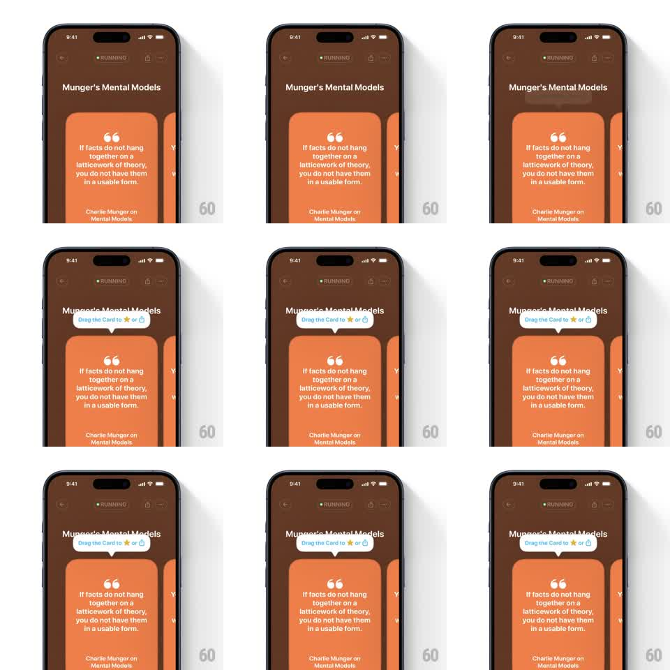

Media
Frame-by-frame

Rebuild this animation 1:1: Eimi's coach-mark tooltip - a white bubble pops in above the quote card with a springy overshoot, reading "Drag the Card to * or (trash)" with inline icons.

Rebuild this animation 1:1: Eimi's coach-mark tooltip - a white bubble pops in above the quote card with a springy overshoot, reading "Drag the Card to * or (trash)" with inline icons. ## Integration Integration: stack-agnostic spec - springs given as stiffness/damping, timed motions as duration + curve; map every value to your framework and animation library of choice. ## Scene Eimi quote screen, dark brown: "Munger's Mental Models" with the RUNNING pill at top and the orange quote card below. The tooltip: a small white rounded bubble with a down-pointing tail, dark text "Drag the Card to" plus a gold star icon, "or", and a blue trash icon. ## Motion spec Pattern: springy coach-mark pop with an attention nudge. - The bubble pops in anchored above the card: scale 0.3 -> 1 with spring ~420/13 (overshoot to ~1.12) from its tail tip as the anchor point, plus opacity 0 -> 1 in the first 100ms. - On landing it does a single settle bounce (translateY -4 -> 0, 200ms). - While visible, it idles with a gentle bob (translateY +/-3px, 2s ease-in-out loop) so it reads as alive but not urgent. - The star and trash icons inside the text sparkle once on entry (scale 1 -> 1.3 -> 1, 250ms each, 100ms apart). - On the user's first card drag, the bubble scales to 0.3 into its tail anchor and fades (200ms); it never returns that session. ## Calibration - The tail must point at the card's drag area - the anchor alignment is the instruction. - Bubble is pure white with a soft shadow; text is dark with the two colored icons inline. ## Reduced motion Bubble fades in (200ms) at rest position; no bob. ## Don't miss - The pop origin is the tail tip, not the bubble center - it should feel spat out by the card. - The bob is position-only; the tail stays glued to its anchor point.